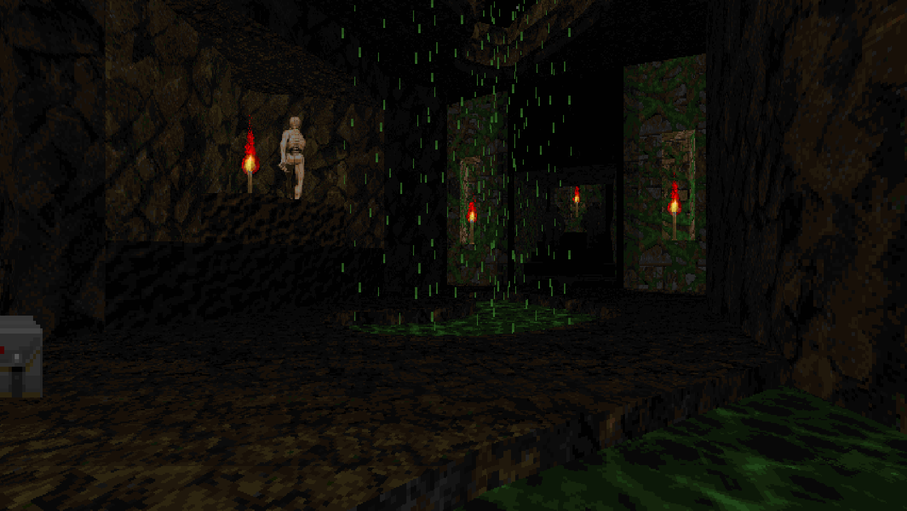
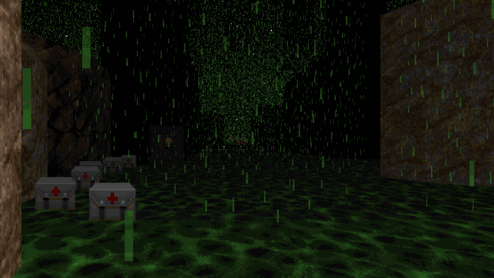
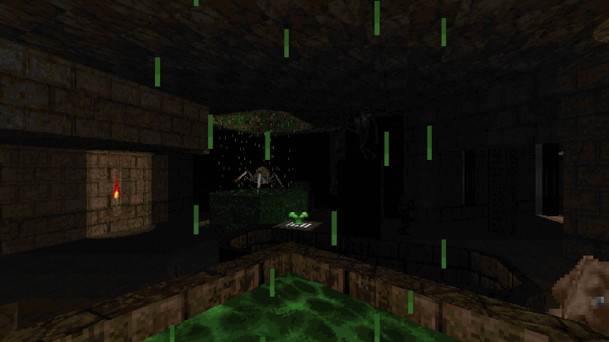
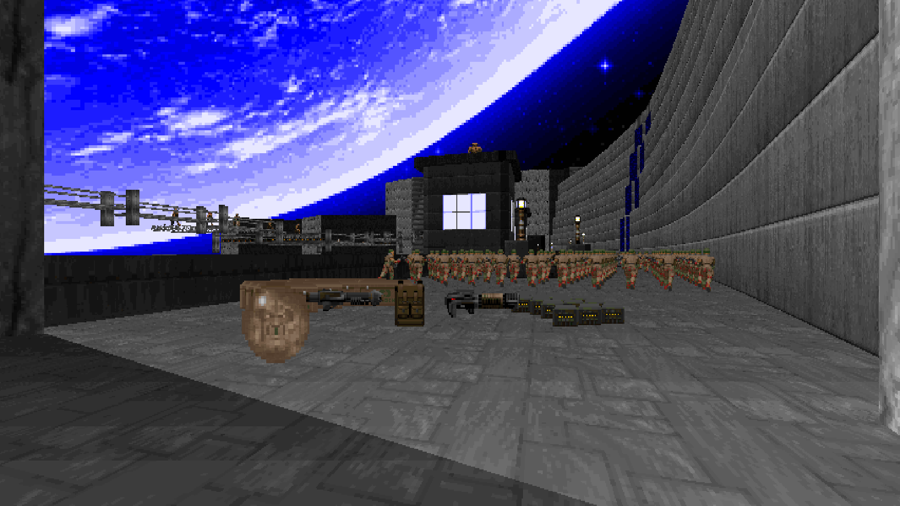
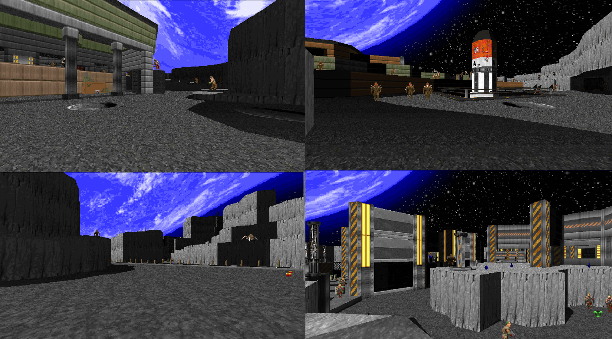
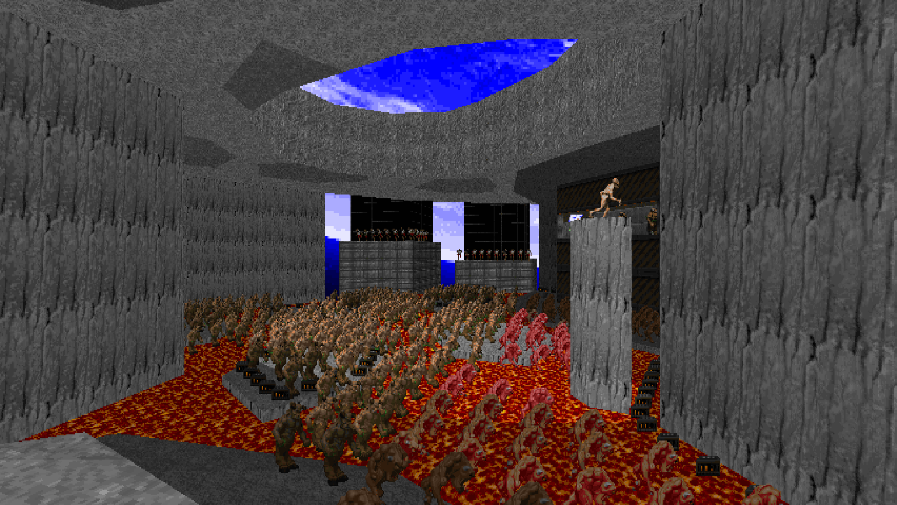
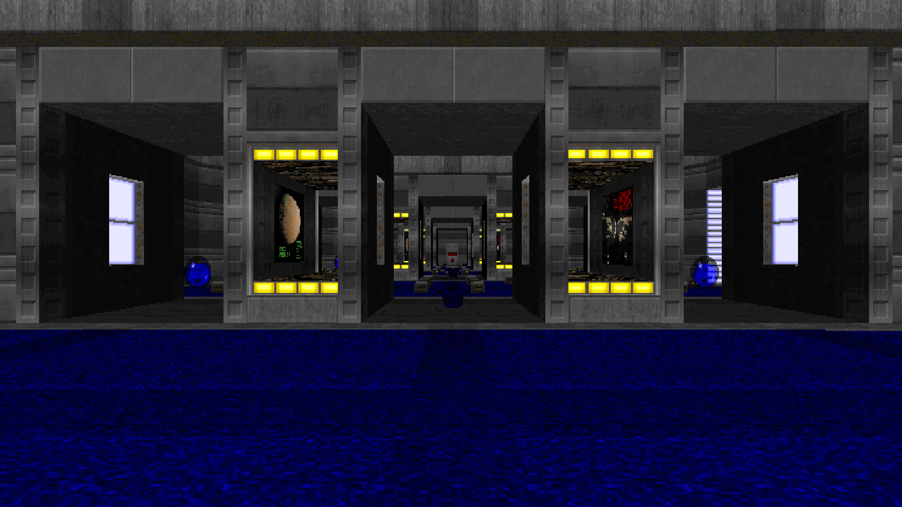
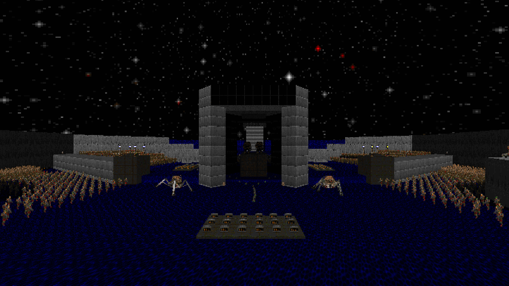
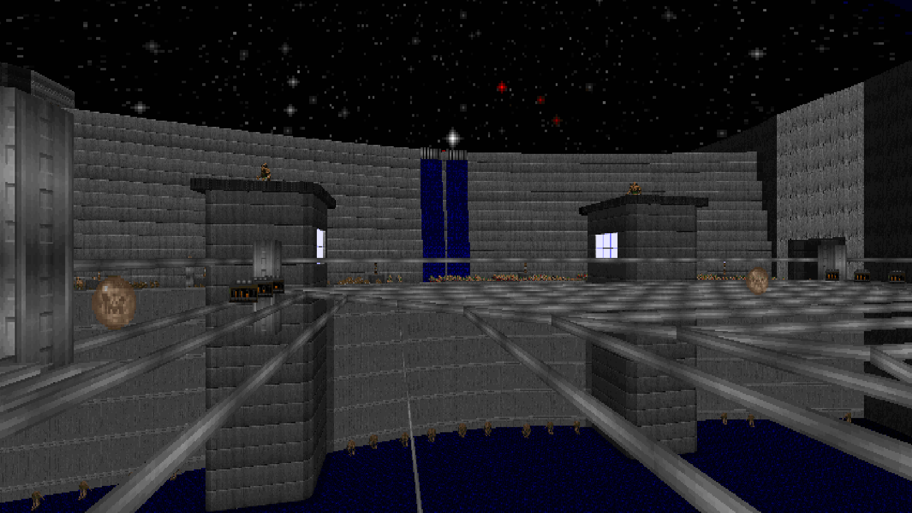

Finn Kane-Smith Level Design Portfolio
When I was six, I really loved 2D Mario games, I was obsessed with New Super Mario Bros. on the DS, and had played through Super Mario Bros 1, 2 & 3 on my father’s SNES. I was only allowed to play computer games for one hour per day, so when I wasn’t playing Mario games, I was instead drawing Mario levels on pieces of A4 paper and imagining myself going through them.
There is still a box stuffed full of A4 paper under my bed at my parents’ home, with hundreds of these level designs, all ordered from start to finish.
As I got older, I stopped making “Mario” levels and started to draw my own characters and enemies for my own original game. I was finally able to turn some of these levels into a game when I got a book with a copy of GameMaker when I was ten years old.
I always enjoyed messing around in a level editor when a game came with one, however as I progressed into adulthood, I began to take this more seriously and started going beyond little prototypes that never saw the light of day, into more polished, released maps for games I loved.
Most of my level design experience comes in the form of mapping for the game Doom 2: Hell on Earth. I played through, and really enjoyed the officially released games (Doom, Doom 2 & Final Doom) but it was the game’s modding scene that kept me around.
Doom’s gameplay is incredibly simplistic by today’s standards: Most enemies fire projectiles straight towards the player, the enemies all have the exact same AI of “walk towards the player’s current position and occasionally perform my attack”, and its weapons follow a simple hierarchy of effectiveness.
However, it’s this simplicity that lends itself incredibly well to a form of self-expression, since Doom’s fairly basic combat requires effort to make engaging levels around. This has led to a wide variety of genres of map inside the same game, including maps trying to evoke the officially released games in their visual style and scope, maps that keep the player engaged with a constant stream of drip-fed monsters to fight, maps that rely on a very small amount of enemies and get the most out of them, and maps that use significantly more enemies than you’d ever face in the original games to create challenging scenarios.
I have made levels in all of these styles, but generally tend to make maps that are challenging, since I enjoy playing that style the most.
Subterror
I created Subterror for a small ‘Secret Santa’ event I ran for my friends who make maps. I randomly assigned a partner for everyone and gave them a list written by their partner of gameplay tropes they generally enjoy.
There were two main things I wanted to accomplish when making Subterror:
- Make an homage to the wad “Crumpets”. Which both me and the person receiving the map really like. This required me to make a mix of small-scale & larger combat encounters, as well as a focus on secrets and exploration. These are two things I normally neglect but wanted to improve at, so I decided to take a step out of my comfort zone and focus on them.
- Try making a map by concentrating on the layout first before designing anything else in specific detail. At the time, I had watched a video of someone creating a map layout by drawings lines at random. I found this idea fascinating because it created a very unusual, but interesting layout and I wanted to give it a go myself.
After I started working on Subterror, I realised that I was leaning a little too close to its inspiration visually, so to differentiate it, I introduced what ended up becoming the map’s defining feature – the Green Rain.
I initially intended on using the rain sporadically and setting the map mostly underground. However, the complex layout lent itself much better to a map open to the sky, so I decided to see how the map would look if I placed significantly more rain props than I’d ever seen used before in a map. The effect is unexpected, and very overwhelming and so I decided to lean into that.
I knew I wanted the map to be non-linear, so the main area can be traversed in a number of different ways, with the two set-pieces off to either side of it, accessible at any time. These small set-pieces were designed around the player heavily using the rocket launcher with one BFG shot. The rocket launcher is an interesting weapon to design around, since it’s incredibly powerful, but requires thought to use up-close due to its high splash damage. The BFG shot offsets this up-close danger, functioning as a “panic button” in these set-pieces.
The set-pieces function slightly differently:
The red key fight is about clearing the sniping turret enemies above the walkable area, before being able to deal with a slowly approaching horde of monsters on all sides of the player, that can’t be killed quickly.
Conversely, the blue key fight involves dodging missiles that occasionally home in on you from up above, until all of the easy-to-kill imps have flooded into the arena, so you can safely deal with the sniping enemies.
The finale is a much more conventional “slaughter” encounter. It starts with the player fighting a large horde of monsters on the ground with little cover, before having to balance a large number of Archviles, (who are trying to resurrect the horde of monsters) on one side, with a Cyberdemon and its very dangerous rockets on the other side.
When creating the release thread for Subterror on the Doom forum I frequent, I made sure to present the wad as if it would all be like the first underground section of the map and didn’t mention the rainy, outdoor area in order to make going into that section for the first time more of a shock.
After its release, Subterror got very positive feedback. People praised the visual design as something unique, and especially liked the reveal of the large rainy area – which made me very happy that I hid it! The combat was also praised, though I was surprised that the presentation of the map (and my reputation from previous maps) had led people to believe the map would be much more challenging than it is.
In hindsight, there are two issues which I would change, and they both came from my decision to make the layout in a very unorthodox manner:
Some people got lost trying to find the entrance to the finale. I had highlighted the staircase leading to it by using a different colour of rock texture, but the issue was more to do with players finding it early on, and forgetting the position of it when they were required to go back there.
The other issue was the scale of the map being a bit too small. I haven’t made many maps with very curvy, complex geometry before, and I got the scale a bit wrong. While it doesn’t ruin the map, I think making the passageways slightly wider wouldn’t have negatively impacted the map but would have made it so Doom’s janky collision for non-orthogonal lines, would be less of a presence! This wasn’t commented on by any players of the map, however I feel it is an issue that, if I were to make another map in this style, I would ensure that this didn’t happen.
Dammed Moon
Dammed Moon was made for a community project (an open project where anyone is allowed to submit a map) I ran called Hardfest 2. I made four maps for this project, but this is the one that I am most pleased with. It’s set on the moon, which is a theme I’ve always loved, with the primary visual inspirations being the wads Lunatic and Valiant, as well as the second episode of Duke Nukem 3D to a lesser extent.
Obviously, it doesn’t make logical sense that there would be a dam on the moon, but I like to imagine Doom being set in a far future where humanity has begun to terraform the Moon and other planets, so this slightly fantastical setting doesn’t feel too outrageous to me!
The main visual challenge for this map was the high contrast lighting. Doom doesn’t have any form of “proper” lighting, each sector has its own light level that is the same in the entire sector, so to make lighting I had to draw it manually. Doing this for a map of this scale was a pain, but I think the effect it creates was absolutely worth it.
Being the biggest (and most challenging) map, I made for this project, I was aiming to make a “macro-slaughter” map. This tends to involve using far more monsters than is arguably necessary, to create a challenging set-piece using Doom’s infighting mechanics, to create the impression of being in a significantly larger battle than you are normally able to triumph against. This means that, instead of thinking in terms of individual enemies when placing them, I think of large groups of one enemy serving as one unit to fulfil a specific function.
The combat of the map almost exclusively uses the BFG. While this has the possibility of getting old for some players, it’s the only option for combat on this scale due to it’s significantly higher DPS compared to every other weapon in the game. I also think its unique mechanics keep it interesting the whole time. Often the focus is less on you killing the enemies quickly, and more on controlling and herding the large horde to spots that make it easier to dodge their projectiles without becoming too overwhelmed.
An important change I made late in development was the placement of significantly more health pickups around the map, particularly megaspheres that restore the player to 200% health, and give them 200% armour too. Despite this lowering the difficulty of the map, it opened up many more strategies to complete certain areas than I had initially expected. In scenarios like this, I think it’s much more fun to be on low health, spot a healing item to get back into the fight and rush to it just in time, than it is to die. This also promoted a very aggressive style of play, which I find more engaging, because the map is very forgiving of mistakes.
The feedback I got for Dammed Moon was generally very positive, people really liked the lunar theme and enjoyed the combat design. I knew that this was a fairly niche map when making it, but it was really nice to see people who enjoy this niche play it for the first time and have a great time with it.
In hindsight, I could have put some more work into the visuals of certain areas, as while I don’t think any part of the map looks bad, the more detailed parts of the map sell the moon theme a lot better. Since I'm creating a sequel to Hardfest 2 this year, I’m hoping to make another moon-themed map that is much stronger visually.
